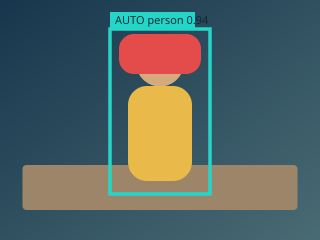
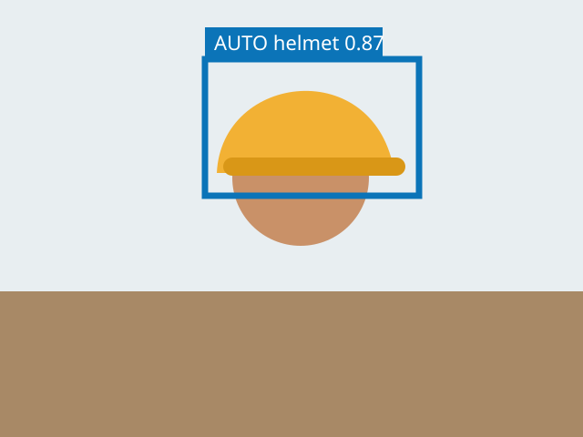
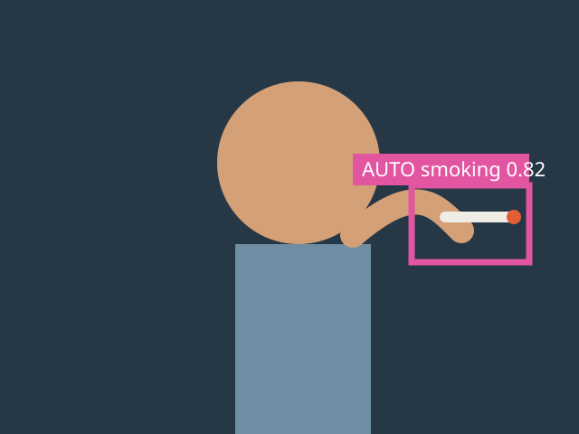

Multi-Teacher Missing Label Recovery
YOLO Label Recovery
Auditable recovery of missing annotations using specialist teacher models, same-class IoU matching and confidence routing.
3,600
Image-model scans
3
AUTO candidates
3
REVIEW candidates
3
OOM retries
Class-level recovery summary
| Class | Scanned | AUTO | REVIEW | Matched GT | Duplicates | Batch | OOM |
|---|---|---|---|---|---|---|---|
| person | 1,200 | 1 | 1 | 842 | 9 | 32 -> 32 | 0 |
| helmet | 1,200 | 1 | 1 | 611 | 5 | 32 -> 16 | 1 |
| smoking | 1,200 | 1 | 1 | 203 | 2 | 32 -> 8 | 2 |
Reproducibility
Tool version0.6.0
Python3.11.13
PyTorch / CUDA2.7.0 / 12.8
GPUNVIDIA GeForce RTX 5090
Candidate distributions
AUTO confidence
REVIEW confidence
AUTO max same-class IoU
Visual quality samples
person

helmet

smoking
